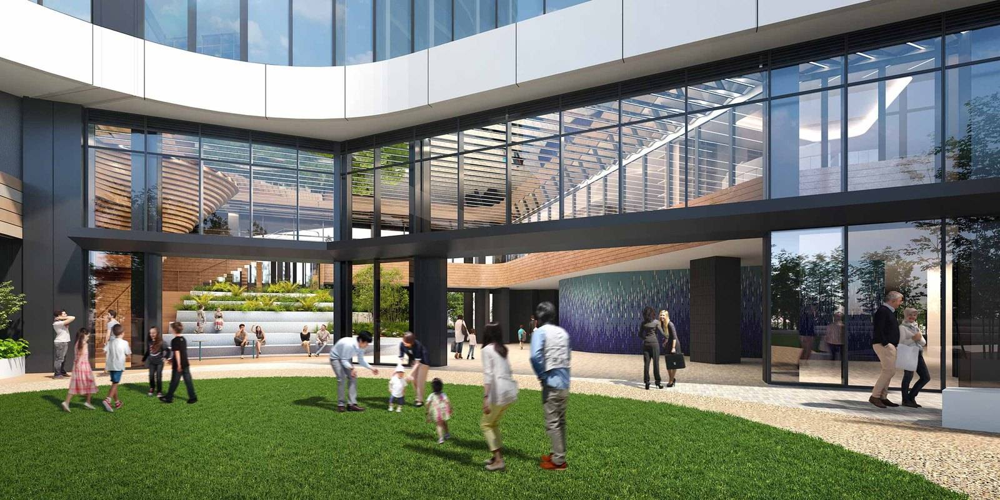

The Toyomi Tower Marine & Sky
490249F
ザ 豊海タワー マリン＆スカイ
東京タワーと浜離宮を
一望する、天空の稀少住戸
- 西ウイング 49階
- 北西向き
- 2LDK＋2WIC＋SIC
- 面積 85.03㎡
- LDK 約24.9帖
- 2027年8月 引渡予定
販売価格2億7,900万円（税込）
- 49FWest Wing
- 85.03㎡契約面積
- 2LDKPlan
- 北西向きDirection
- 2,046戸Residences
- 10分勝どき駅 徒歩
The Toyomi Tower Marine & Sky
490249F
東京タワーと浜離宮を
一望する、天空の稀少住戸
販売価格2億7,900万円（税込）
01 — Floor Plan

3D間取図 メニュープラン1・家具はイメージです
専有面積（壁芯）84.10㎡
＋専有防災倉庫0.93㎡
東京タワーへと弧を描く
ラウンドサッシが、
約24.9帖のリビングダイニングを
やわらかく抱きとめます。
主寝室と洋室には
それぞれウォークインクローゼット、
玄関には約0.9帖の
シューズインクローゼット。
LD・主寝室の天井高は約2.6m。
LDには天井カセットエアコン。
空へ、都心へ、視線がのびやかに。
02 — View
正面に東京タワー、
眼下には浜離宮の深い緑。
汐留の摩天楼から
築地の新しい街並みまで、
都心のすべてが
この窓に集まります。
夕暮れには東京タワーが
茜色の空に浮かび、
やがて浜離宮の灯りと
都心の夜景がきらめきはじめます。

昼の眺望（イメージ）東京タワー・浜離宮・築地方面（AI生成イメージ）

夜景の眺望（イメージ）ライトアップした東京タワーと浜離宮の夜景（AI生成イメージ）
03 — Living Dining
ラウンドサッシの向こうに、
東京タワーと浜離宮の緑。
昼は光に満ち、
夜は都心の灯りに包まれる
空間のイメージです。

リビングダイニング 昼（イメージパース）AI生成・家具と内装はイメージです

リビングダイニング 夜景（イメージパース）AI生成・家具と内装はイメージです
04 — Entrance & Residence
浜離宮の緑の先に、金色の帯をまとった2棟が空へのびる。波と緑をかたどった3階建の基壇部が両棟を結び、3階のエントランスホールではコンシェルジュが迎えます。

外観地上53階建・総戸数2,046戸（AI生成イメージ）

エントランスアプローチ

エントランスのエスカレーター

3F エントランスホール

エレベーターホール

内廊下

エントランス 夜景
05 — Common Space
東京タワーを望む51階のスカイスパ、2層吹抜けのスカイラウンジ、ゲストルーム、ラウンジ、テラス。暮らしの延長に、上質なもてなしの時間を。

51・52F スカイラウンジ2層吹抜け、バーカウンター付き

スカイラウンジ バー

スカイラウンジ 外観

スカイラウンジ ソファ席

51F スカイスパゲスト
06 — Common Space

3F ウエストラウンジ

3F オープンテラス

3F オープンテラス 夕景

3F ライブラリー

3F フィットネスルーム

3F ゴルフレンジ

3F プレイルーム

3F イーストラウンジ

3F ゲストルーム 海辺のケーブハウス

3F ゲストルーム 海辺の和旅館

3F ゲストルーム 海辺のキャンプ

3F 芝生広場 エントランス前のグリーン
07 — Location
銀座まで約1.8km。
隣には小学校と運動公園、
対岸には浜離宮と築地。
都心を手の内にしながら、
水辺の開放感を日常に。
中央区、豊海のアドレスです。

豊海・勝どきの空撮

現地周辺の水辺 徒歩5分

浜離宮恩賜庭園 約1,680m（AI生成イメージ）

勝鬨橋と隅田川テラス 徒歩11分
Future of Tsukiji
築地地区まちづくり事業。約5万人を迎えるマルチスタジアムと約10haの水辺空間が、2030年代前半のまちびらきへ。対岸の夜景も、これから変わりはじめます。

築地地区まちづくり事業 完成予想CG 現地から徒歩13分・約980m（AI生成イメージ）

マルチスタジアム 約5万人収容・屋内全天候型（AI生成イメージ）
08 — Access
都営大江戸線で汐留・六本木へ直通。
徒歩3分のバス停、
徒歩6分の東京BRTも、
日々の選択肢に。

路線図勝どき駅から主要駅へ

バス路線銀座・東京駅方面
※電車の所要時間は「勝どき」駅からの通勤時のもので、乗り換え・待ち時間を含みます（出典：公式サイト）。バスは徒歩3分の「山九本社前」等のバス停から平日7:30〜9:00着の所要時間（Yahoo!路線情報、2024年8月時点）。東京BRT「勝どきBRT」停留所は徒歩6分。車は環状2号線で築地・新橋・虎ノ門へ。
09 — Outline

間取図2LDK＋2WIC＋SIC（W-84Bnw1 メニュープラン1）
| 駐車場 | 敷地内 機械式650台・平面18台（抽選・別途契約） |
|---|---|
| 構造・規模 | 鉄筋コンクリート造一部鉄骨造 地上53階地下1階建（制震・制振構造） |
| 総戸数 | 2,046戸 |
| 竣工・引渡 | 2026年11月下旬 竣工予定 ／ 2027年8月 引渡予定 |
| 管理費 | 33,840円／月 |
| 修繕積立金 | 14,710円／月 |
| その他費用 | インターネット等使用料 715円／月、修繕積立基金 1,471,000円（引渡時） |
| 敷地の権利 | 所有権 |
| 用途地域 | 準工業地域 |
| 施工・管理 | 施工 清水建設株式会社 ／ 管理 三井不動産レジデンシャルサービス株式会社（常駐） |
| 物件名 | ザ 豊海タワー マリン＆スカイ W4902号室 |
|---|---|
| 販売価格 | 2億7,900万円（税込） |
| 所在地 | 東京都中央区豊海町41番（地番） |
| 交通 | 都営大江戸線「勝どき」駅 徒歩10分 |
| 所在階 / 向き | 西ウイング 49階 ／ 北西向き |
| 間取り | 2LDK＋2WIC＋SIC（W-84Bnw1タイプ・メニュープラン1） |
| 契約面積 | 85.03㎡ ※専有面積（壁芯）84.10㎡＋専有防災倉庫0.93㎡ |
| バルコニー | 7.34㎡ |
| 付帯 | 専有防災倉庫 0.93㎡ |
| 天井高 | LD・主寝室 約2.6m（下り天井・梁下部分を除く） |
| 眺望 | 東京タワー・浜離宮・築地・ 北西方向 |
※本物件は2026年10月現在建築中です。掲載の外観・共用部・周辺の画像は完成予想CGで、実際とは異なる場合があります。眺望の写真・CGは現地相当の高さから撮影・制作したもので、本住戸からの眺望とは異なります。
※管理費・修繕積立金等は分譲時の管理費等一覧表（予定）に基づく月額です。正確な金額は重要事項説明書にてご確認ください。
※リビングのイメージパース、昼・夜景の眺望、外観・浜離宮・スカイラウンジ・築地再開発の一部画像、24時間タイムラプス動画、外観・共用部の動画はAI生成（完成予想CGをもとに制作）で、家具・内装・外装の色調はイメージです。
※掲載内容は2026年10月現在のものです。共用施設・サービスの内容は管理規約等に従い、変更となる場合があります。家具・調度品は販売価格に含まれません。

The Toyomi Tower Marine & Sky — W4902
販売価格2億7,900万円（税込）
https://tokyo-estate.github.io/toyomi-tower-w4902/